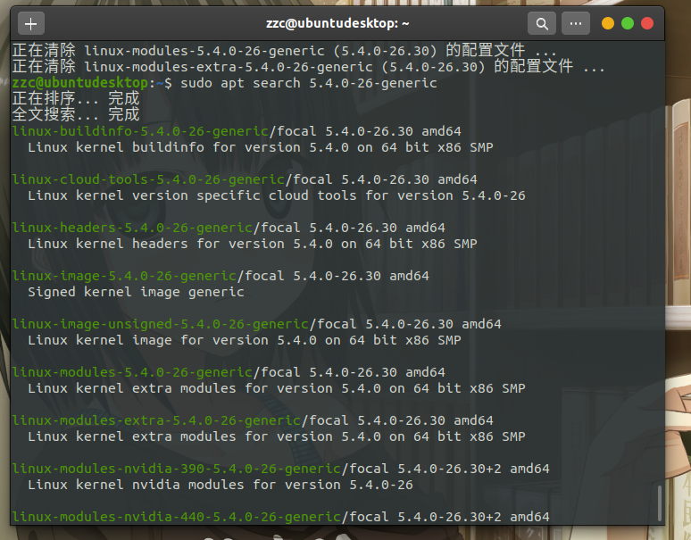
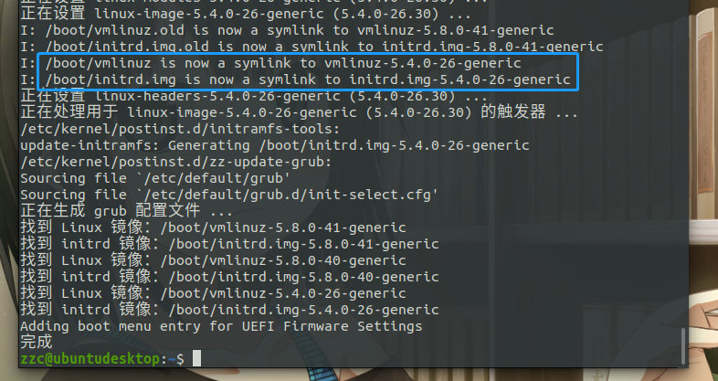

Ubuntu 20.04 更换内核踩坑
引言
Ubuntu 20.04目前支持的最新内核为 5.8.0-45；但是公司有些软件必须运行在 5.4.0-26 ；所以得换内核。
然后我坑我自己；搞了好几天。
apt 直接安装 5.4.0-26-generic
先搜一下名字叫啥
sudo apt search 5.4.0-26-generic

安装
安装 linux-image-5.4.0-26-generic 会提示建议安装 linux-headers-5.4.0-26-generic
既然建议，就一起装了；咱也不知道干啥的
sudo apt install linux-image-5.4.0-26-generic linux-headers-5.4.0-26-generic

图片说符号连接已经改了；那就重启试试
意外
不出意外的话现在已经出意外了，重启之后看内核，依旧还是之前的新版内核。WTF？
各种百度，各种搜索之后；发现 grub 会优先引导高版本内核。
手动更换 grub 引导
开机的时候按 Esc，出现 grub 引导菜单后选择 ubuntu 高级选项，然后找到我们刚刚装的内核 5.4.0-26
潇洒的按下回车，提示载入 5.4.0-26 内核
然后再一次出现意外，卡在 logo 界面进不去系统
经过漫长的等待还是进不去，重启进入原来内核
进不去系统
换到命令行，发现 GNOME Display Manager 启动失败
遂百度 GDM 启动失败的解决方案
用 lightgdm 替换 gdm3
可以，没问题；刚安装的内核可以启动了，但是 lightgdm 不支持自动锁屏（公司要求必须设置自动锁屏）
继续寻找为什么 GNOME Display Manager 启动失败
找到 GDM 启动失败原因了
在多次重启之后，终于有一次进入 tty2 了（之前我也尝试过很多次 ctrl + alt + F2 ，都没成功进入过其他tty）
然后看看为什么启动失败
sudo systemctl status gdm3.service
输出一大堆，没注意；只看到有超时（这时候我已经在心里打我自己好几顿了）
GDM 启动超时
为什么呢？因为我手贱
每次关机 a stop job ... 然后等 1 分 30 秒
性子急，等不了；遂百度解决方案
sudo vim /etc/systemd/system.conf
将 DefaultTimeoutStopSec 改为 1s
罪魁祸首
每次我手贱；会将 DefaultTimeoutStartSec 也改为 1s
所以乖乖的改回去就可以了。
网卡不见了！
是的；一切启动之后网卡又不见了。
各种百度，是驱动没有了
原因找到了就解决；踩了各种坑之后
参考文章《【解决方法】ubuntu APT源升级内核 缺少驱动》；
安装modules-extra
sudo apt install linux-modules-extra-5.4.0-26-generic
终于解决了！！！
一个下载离线 deb 的网站
由于个人水平有限，文中若有不合理或不正确的地方欢迎指出改正